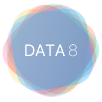
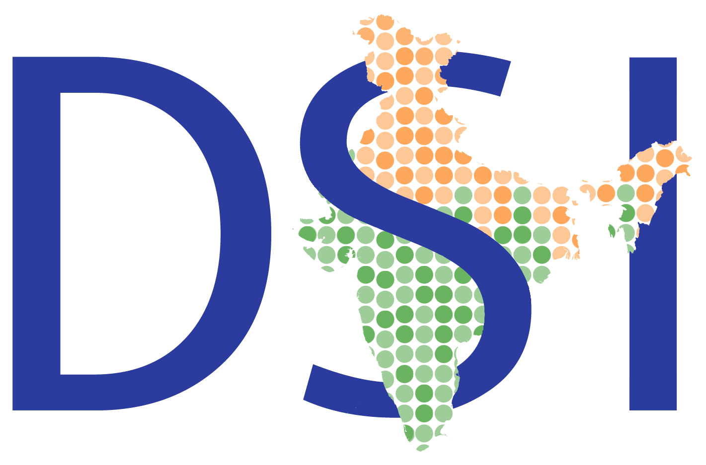

Sathvik Nair
I'm a second year undergraduate studying cognitive science and computer science at UC Berkeley. I love learning about human behavior and decision making processes, and I'm amazed by how advances in computation can allow us to create tools to make more informed, data-driven decisions which can advance our society. As a result, I'm interested in product management, data science, software development, and user experience research. Currently, I'm researching natural language processing and working in data science education, both at Berkeley and across the world. In my free time, I enjoy playing the violin and tabla (a South Asian percussion instrument), reading about history and current events, and trying out new recipes.
What am I working on?
This semester, I'm taking the following courses: Efficient Algorithms and Intractable Problems (CS 170), Probability for Data Science (STAT 140), The Mind, Brain, and Behavior (MCB C61), and Stigma and Prejudice (PSYCH 167AC).
Research
I'm a research assistant at UC Berkeley's Computational Cognitive Science Lab developing an audiovisual web-based experiment that models how understanding of language changes as the same phrase is transmitted across multiple subjects. In addition to the experiment, I'm also working on developing efficient pipelines to analyze the data using probabilistic machine learning models and Python.
Teaching
I'm a tutor for the fastest-growing course at UC Berkeley, Foundations of Data Science, helping teach statistical inference techniques using Python. My responsibilities include holding office hours, teaching a small section, and grading assignments.
Social Entrepreneurship
I'm directing Data Science for India, which I founded with fellow Berkeley students last May. Our work over the summer teaching fundamental concepts of data science in over 12 Indian high schools was recognized by the Institute of South Asia Studies at UC Berkeley. This semester, I'm working on leading our curriculum development team.
Classes I've Taken
- Discrete Matematics and Probability Theory (EECS 70, Fall 2017)
- Linear Algebra and Differential Equations (MATH 54, Fall 2017)
- Algorithms and Data Structures (CS 61B, Spring 2017)
- Data Science and the Mind (COGSCI 88, Spring 2017)
- Foundations of Data Science (CS/STAT/INFO C8, Spring 2017)
- Designing Information Devices and Systems (EECS 16A, Fall 2016)
- The Structure and Interpretation of Computer Programs (CS 61A, Fall 2016)
Where I've Worked
I interned at CivikOwl last summer 2017 working on software development. I learned technologies like ReactJS, D3.js, and jQuery, which greatly improved my skillset as a frontend developer, followed up on my interest in civic tech, and picked up concepts of the Agile methodology, human-centered design, and product management. I added major features (both web and mobile) to a web app and also created a data visualization of users' news reading habits, such as time spent and political leaning of articles read. These data were gathered through the CivikOwl Chrome extension, featured on ProductHunt.
Last spring, I joined Paradigm Shift, a venture that's working to promote computer science education in underserved high schools across the US, as a developer. I worked on content for workshops introducing computer science and a Python project that teaches basic concepts of artifical intelligence.
I was an astrophysics research intern at UC Santa Cruz in the summer of 2015. I learned how to program using Python and scientific computing libraries such as Numpy, Scipy, and Matplotlib, and developed a novel algorithm that analyzes data from the spectra of distant galaxies to draw conclusions about their temperature. Our abstract was published on the Harvard-NASA database and we were named national semifinalists in the Siemens Competition for Math, Science, and Technology.